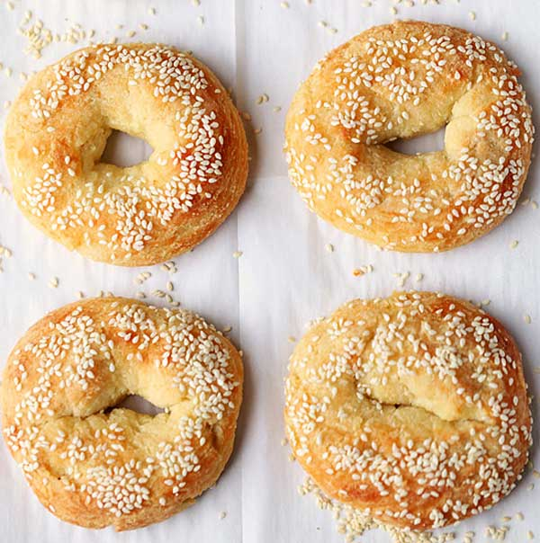

Mozzarella Bagels
This recipe is yummy AND Keto-friendly!
Servings 8
Ingredients
- 2 c. almond flour
- 1 tbsp. baking powder
- 3 c. shredded mozzarella cheese
- 2 oz. cream cheese
- 2 large eggs, plus 1 large egg lightly beaten
- 3 tbsp. everything bagel seasoning
Instructions
- Preheat oven to 400°. Line 2 rimmed baking sheets with parchment paper. In a large bowl, whisk the almond flour with the baking powder. In a medium microwave safe bowl, combine the mozzarella cheese and cream cheese. Microwave, stirring every 30 seconds, until the cheese is melted and combined, about 2 minutes total.
- Scrape the cheese mixture into the bowl with the almond flour mixture and add the two eggs. Mix until well combined. Divide the dough into 8 equal portions. Roll each portion into a ball. Press your finger into the center of each ball and stretch to form a bagel shape. Arrange bagels on prepared baking sheets.
- Brush the top of each bagel with beaten egg and sprinkle with everything bagel seasoning.
- Bake on the middle rack for 20 to 24 minutes or until golden brown. Let cool 10 minutes before serving.